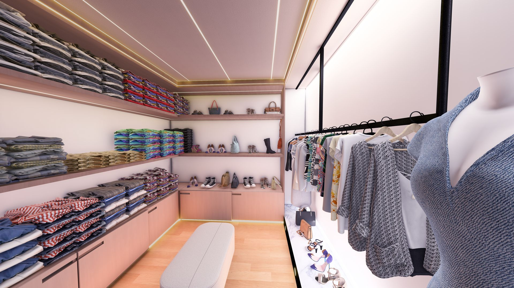
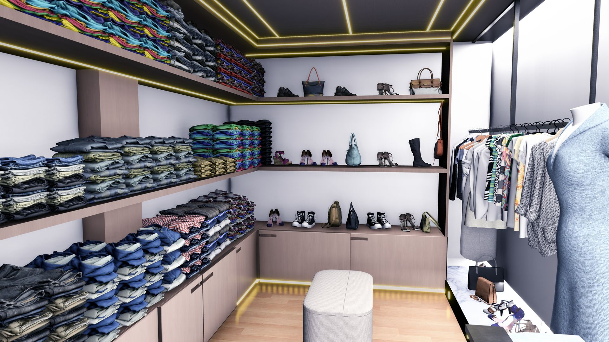
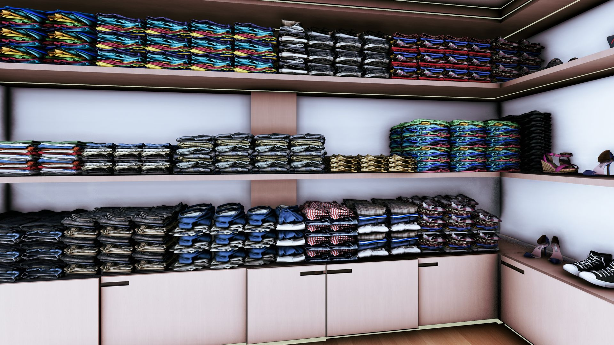
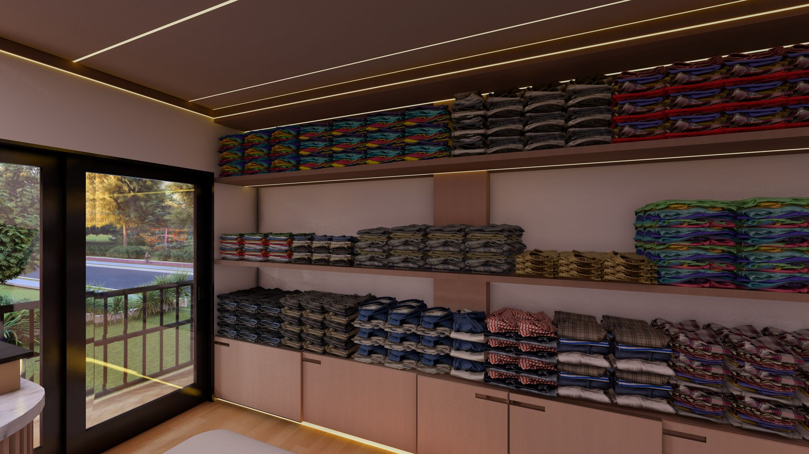

Mise en Scène de l'Espace de Vente
Le Showroom Kotto est une démonstration de l'importance de la scénographie dans le retail moderne. Le projet s'articule autour d'une vitrine monumentale et d'un aménagement intérieur fluide, conçus pour valoriser les produits tout en offrant une expérience client immersive.
L'utilisation de matériaux réfléchissants, d'un éclairage de précision et d'une signalétique intégrée permet de structurer les parcours de vente. Le design allie sobriété structurelle et dynamisme visuel, créant une identité forte pour cet espace commercial stratégique situé à Douala.
Localisation
Kotto, Douala
Programme
Showroom & Bureaux Administratifs
Concept
Scénographie & Retail



